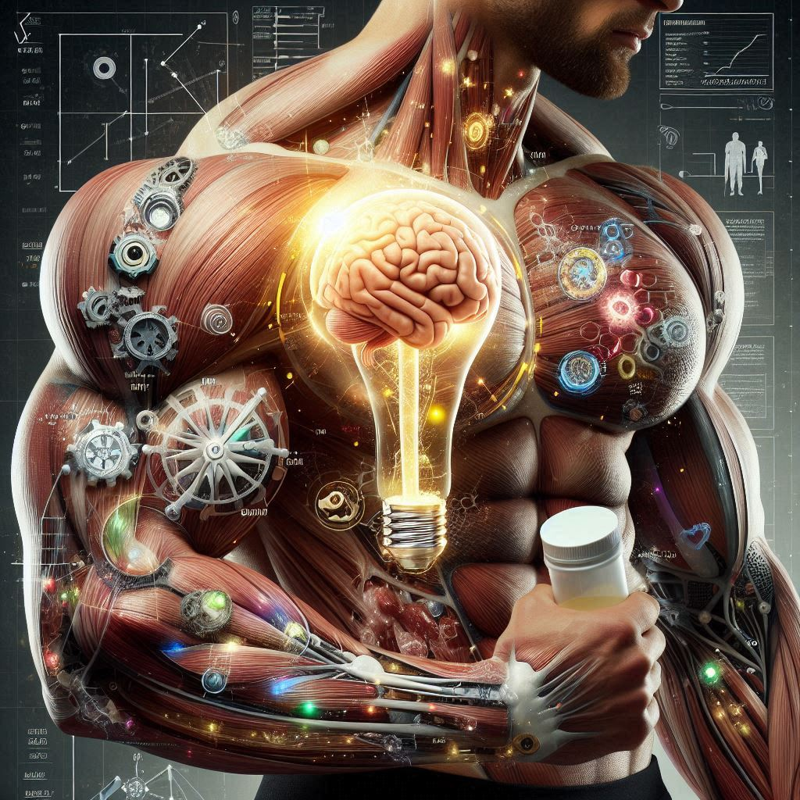

Benefícios
para o Corpo:
Fisiculturismo Natural
- Desenvolvimento Muscular Sólido: Fisiculturistas naturais focam em treino consistente e nutrição adequada para desenvolver massa muscular de forma sustentável.
- Saúde a Longo Prazo: Evitar esteroides e outras substâncias ergogênicas diminui o risco de problemas de saúde a longo prazo, como doenças cardíacas e hepáticas.
- Equilíbrio Hormonal: Manter os níveis hormonais naturais ajuda na recuperação e evita desequilíbrios que podem causar efeitos colaterais graves.
Benefícios para a Mente:

- Disciplina e Persistência: O processo de treinar e alcançar objetivos naturalmente promove disciplina e resiliência.
- Autoestima e Satisfação: Alcançar metas físicas sem atalhos aumenta a autoestima e proporciona uma sensação de conquista genuína.
- Menor Ansiedade: Sem os efeitos colaterais dos esteroides, há menor risco de ansiedade e depressão associadas a desequilíbrios químicos.